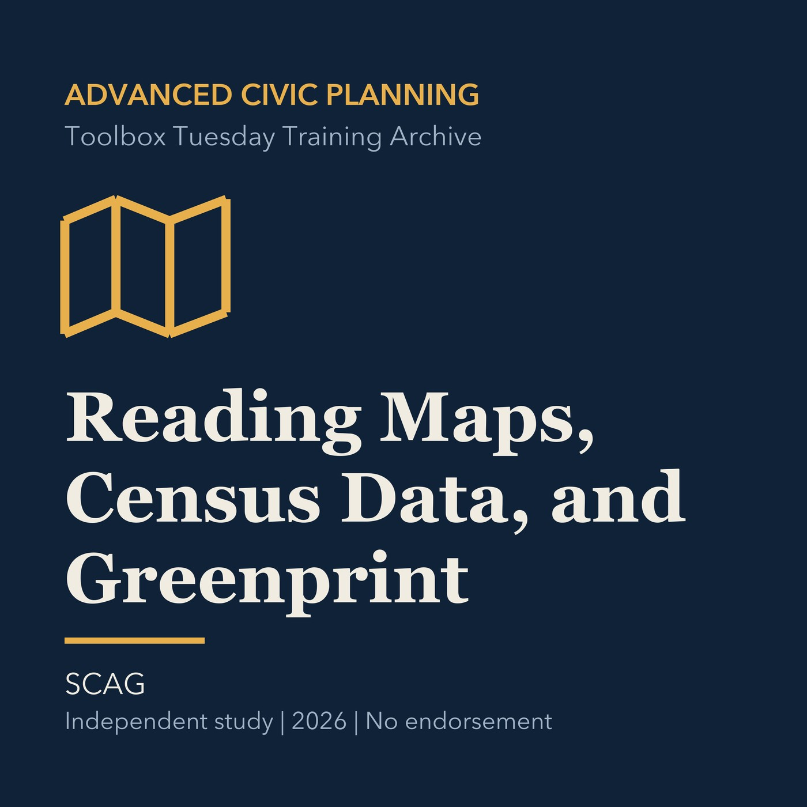

EPISODE 27
Reading Maps, Census Data, and Greenprint
Builds habits for checking geography, vintage, uncertainty, access, and licensing in planning data.

- Stable GUID
787d636d-7576-5eac-b4f4-7923632d31f1- Release
- advanced-civic-planning-v2026.2
- SHA-256
957057d045e923cc4abd9e642c01fe535bed49d22c00dcc29a968deb0da44f4b